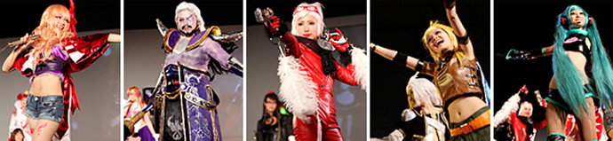

將於一般公開日實施的COSPLAY（角色扮演）企劃
於東京電玩展2011的一般公開日中，將「Yasuragi Mall」（幕張國際展覽中心裡3展廳和4展廳之間的空間）作為COSPLAY區。
自9月17日（週六）晚上6點30分起於8展廳的活動舞臺上，舉辦「Cosplay Collection Night @TGS」（主辦∶Cure株式會社livedoor ）。我們期待COSPLAY表演者們到場參加。
Cosplay Collection Night @TGS presented by Cure

由日本最大的COSPLAY社群網站『Cure』所舉辦的COSPLAY時裝秀&舞會。
由提供動感、魅力四射COSPLAY且具有超凡吸引力的COSPLAY表演者—Inui Tatsumi 所帶來的『Cure Cosplay Collection』，以及結合人氣DJ與VJ的組合，即將誕生出遊戲音樂和COSPLAY表演者構成的全新空間。
舉辦概要
| 時 間 | 9月17日（週六）18:30～20:00 |
|---|---|
| 地 點 | 幕張國際展覽中心 8展廳 活動舞臺 |
| 角色陣容 | 登場的COSPLAY表演者：KANAME☆、KonomiAkira 、Rayna Wang （中國）等，共計約100人左右 DJ：後藤王樣、tom2 VJ：RawLight MC: Yunmao Ayakawa |
| 主 辦 | （主辦∶Cure株式會社livedoor）http://curecos.com/ |
參加辦法
如欲參加「Cosplay Collection Night」，需持號碼券入場。
號碼券將於9月17日（週六）下午1點起於「Yasuragi Mall」（幕張國際展覽中心裡3展廳和4展廳之間的空間）的「COSPLAY區」發放。
※東京電玩展2011的入場時間截止至下午4點。如欲參加，請務必在下午4點以前進入東京電玩展2011會場。
※達到特定人數時，號碼券將停止發放。
※不限COSPLAY表演者，任何人均可參加。
※當天若有不明之處，請向「Yasuragi Mall」的Cosplay Collection Night號碼券發放處進行確認。
入場次序
下午5點展示結束後，請於7展廳的「飲食區」附近集合處會合。晚上6點左右將由工作人員引導下進入8展廳的活動舞臺。
※入場時我們將會確認號碼券，因此請務必將號碼券準備好並置於手邊。
※僅限Cosplay Collection Night參加者在17日晚上9點以前能夠使用2展廳的COSPLAY更衣室。
※貴重物品請務必隨身攜帶、自行保管。
※會場內若發生貴重物品及隨身攜帶物品的竊盜、破損等事件，主辦單位概不負責。
致COSPLAY表演者們（請大家合作的要點以及注意事項）